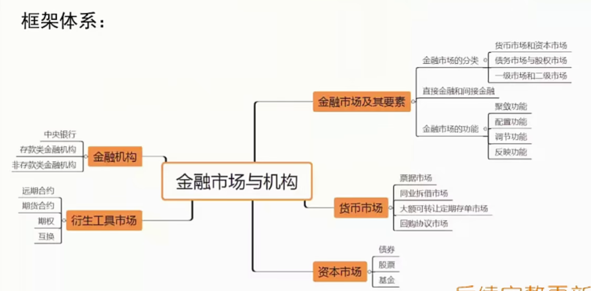

第一节 金融市场及其要素
一、金融市场
- 有形或无形的场所
- 供求关系
- 价格决定机制
1
2
3
4
| 金融市场是指以金融资产为交易对象而形成的供求关系及其机制的总和，包括：
1. 它是金融资产进行交易的一个有形或无形的场所。
2. 它反映了金融资产的供应者和需求者之间所形成的供求关系。
3. 它包含了金融资产交易过程中所产生的运行机制，其中最主要的是价格（包括利率、汇率及各种证券的价格）决定机制。
|
二、金融市场的分类
1. 按交易工具的不同期限
货币市场（一年以内）和资本市场（一年及以上）
2. 按获取资金的方式
债务市场（债权债务关系）与股权市场（剩余索取权）
3. 按市场层次
一级市场（发行市场）和二级市场（流通市场）
| 区别 |
期限 |
作用 |
风险 |
| 货币市场 |
一年以内 |
短期周转资金 |
较小 |
| 资本市场 |
一年及以上 |
大型投资、财政收支平衡 |
较高 |
1
2
3
4
5
6
7
8
9
10
11
12
13
14
15
16
17
18
19
20
21
22
23
24
25
26
27
28
29
|
货币市场和资本市场的分类依据及定义，并简要比较两个市场的特点。【西南财经大学 2017 金融硕士】
分析
从期限、作用和风险的角度作答。
一级市场（发行市场）：资金需求者将金融资产首次出售给公众时所形成的交易市场。
二级市场（流通市场）：证券发行后，各种证券在不同的投资者之间买卖流动所形成的市场。
关系
1. 发行市场是流通市场的基础和前提，没有发行市场就没有流通市场。
2. 流通市场是发行市场存在与发展的重要条件之一，无论从流动性上还是从价格的确定上，发行市场都要受到流通市场的影响。
1.“直接融资”定义为资金盈余者与短缺者相互之间直接进行协商，或者在金融市场上由前者购买后者发行的有价证券的资金融通活动。
2.“间接融资”定义为资金盈余者通过存款等形式，将闲置的资金提供银行，再由银行款给短缺者的资金融通活动。
3. 区别不在于是否有金融机构，核心区别在于金融机构扮演的作用。
4. 我国融资现状。
易会满：提高直接融资比重（六大重点任务）
1. 全面实行股票发行注册制，拓宽直接融资入口。
坚持尊重注册制的基本内涵，借鉴国际最佳实践，体现中国特色和发展阶段特征，及时总结科创板、创业板试点注册制的经验，稳步在全市场推行以信息披露为核心的注册制
同时，全面带动发行、上市、交易持续监管等基础制度改革督促各方归位尽责，使市场定价机制更加有效，真正把选择权交给市场，支持更多优质企业在资本市场融资发展
2. 健全中国特色多层次资本市场体系，増强直接融资包容性。
切实办好科创板，持续推进关键制度创新；突出创业板特色更好服务成长型创新创业企业发展；推进主板（中小板）改革深化新三板改革，提升服务中小企业能力；稳步开展区域性股权市场制度和业务创新试点，规范发展场外市场；积极稳妥发展金融衍生品市场，健全风险管理机制，拓展市场深度、增强发展韧性。
3. 推动上市公司提高质量，夯实直接融资发展基石。
持续优化再融资、并购重组、股权激励等机制安排，支持上市公司加快转型升级、做优做强；进一步健全退市制度，斬通多元退出渠道，建立常态化退市机制，强化优胜劣汰；推动上市公司改革完善公司治理，提高信息披露透明度，更好发挥创新领跑者和产业排头兵的示范作用，引领更多企业利用直接融资实现高质量发展。
4. 深入推迸债券市场创新发展，丰富直接融资工具。
完善债券发行注册制，深化交易所与银行间债券市场基础设施的互联互通，进一步支持银行参与交易所券市场；加大资产证券化产品创新力度，扩大基础设施领域公募不动产投资信托基金试点范围，尽快形成示范效应；扩大知识产权证券化覆盖面，促进科技成果加速转化
5. 加快发展私募股权基金，突出创新资本战略作用。
进一步加大支持力度，积极拓宽资金来源，畅通募、投、管、退等各环节，鼓励私募股权基金投小、投早、投科技；出台私募投资基金管理暂行条例，引导其不断提升专业化运作水平和合规经营意识；加快建部际联动、央地协作的私募风险处置机制，切实解决“伪私募、类私募、乱私募”突出问题，促进行业规范健康发展。
6. 大力推动长期资金入市，加快构建长期资金“愿意来、留得住”的市场环境。
加快构建长期资金“愿意来、留得住”的市场环境，壮大专业资产管理机构力量，大力发展权益类基金产品，持续推动各类中长期资金积极配置资本市场；加大政策倾斜和引导力度，稳步加长期业绩导向的机构投资者，回归价值投资的重要理念；鼓励优秀外资证券基金机构来华展业，促进行业良性竞争。
|
四、金融市场的功能🎒
金融市场最基本的功能是实现有盈余资金的储蓄者和资金短缺的支出者之间的资金转移。
- 聚敛功能：分散的小额资金聚敛
- 配置功能：资源、财富再分配、风险再分配
- 调节功能：对宏观经济调节作用
- 反映功能：经济的晴雨表
第二节 货币市场
一、货币市场的主要功能
货币市场是指一年以内的短期金融工具交易所形成的供求关系及其运行机制的总和。货币市场具有如下特色：
- 交易期限短
- 流动性强
- 安全性高（发行主体信用等级较高）
- 交易额大（批发市场）
二、票据市场
- 商业票据市场
- 银行承兑汇票市场
- 中央银行票据市场
1
2
3
4
5
6
7
8
9
10
11
12
13
14
15
16
17
18
19
20
21
22
23
|
大公司为了筹措资金，以贴现方式出售给投资者的种短期无担保承诺凭证
商业票据一般采用贴现方式发行，在票面标明贴现率。
发行价格=面额/(1+实际利率到期天数/360)
例子：
某商业汇票报价为：票面金额为 1000 元，利率为 3.06%，到期期限还有 30 天。该商业票据的发行价格为
1000/(1+3.06%×30/360)=997.47 万元
承兑，是指业汇票到期前，汇票付款人或指定银行确认票据记明事项，承诺在汇票到期日支付汇票金额给汇票持有人并在汇票上签名盖章的票据行为。
经企业承兑的汇票为**商业承兑汇票**，经银行承兑的汇票为**银行承兑汇票**。
银行承兑汇票将企业信用转化为银行信用，降低信用风险，有利于交易的达成。
是中央银行向商业银行发行的短期债务凭证，其实质是中央银行债券。
中央银行发行票据的目的不是筹集资金，而是减少商业银行可以贷放的资金量，进而调控市场中的货币量。
贴现：持票人将未到期的票据（主要是银行承兑汇票）向银行申请贴现。
转贴现：银行收到票据后作为持票人再向其他银行申请贴现。
再贴现：银行收到票据后作为持票人向中央银行申请贴现 。
转贴现的票据行为发生在（）
A。企业与商业银行之间-贴现
B。商业银行之间✅
C。企业之间
D。商业银行与中央银行之间-再贴现
|
三、同业拆借市场
1. 参与主体仅限于金融机构
1
2
3
4
5
6
7
| 同业拆借市场是指金融机之间以货币借贷方式进行短期资金融通活动的市场。
同业拆借市场的形成源于中央银行对商业银行法定存款准备金的要求。
代表性同业拆借利率
1. 伦敦银行同业拆借利率 LBOR
2. 联邦基金利率（上限：折扣货款窗口利率；下限：存款准备金利率）
举例：
目前市场上的联邦基金利率是 2.5%，而公开市场委员会定把利率提高到 2.75%。为实现这个目标，美联储在公开市场上卖出债券，收回货币。这时，金融机构持有的货币少，超额储备金降低银行间储备金的贷款利率上升。美联储进行这种操作，直到联邦基金利率达到 2.75%的目标利率。如果美联储希望降低联邦基金利率，反向操作（买入债券，放出货币）就可以了
|
四、大额可转让定期存单[CDs]市场
1
2
3
4
5
6
7
8
9
10
11
12
13
14
|
大额可转让定期存单是由商业银行发行的具有固定面额、固定期限，可以流通转让的大额存款凭证。
背景：**Q 条例**（禁止联邦储备委员会的会员银行对它所吸收的活期存款【30 天以下】支付利息，并对上述银行所吸收的储蓄存款和定期存款规定了利率上限）
银行：美国花旗银行
1. 存单面额大
2. 不记名，便于存单持有人转让
3. 二级市场非常发达
可转让存单首创于下面哪家银行？()【华东师范大学 2014 金融硕士】
A。英国英格兰银行
B。美国第一银行
C。汇丰银行
D。美国花旗银行
|
五、回购协议市场
- 回购协议是一种质押款
- 逆回购协议
1
2
3
| 回购协议是指在出售证券的同时，和证券的购买商签订协议，约定在一定期限后按原定价格或约定价格购回所卖证券，从而获取即时可用资金的一种交易行为。
从本质上说，回购协议是一种质押款，其质押品为证券。
与上述证券交易方向相反的操作被称为逆回购协议：买入证券的一方同意按约定期限以约定价格出售其所买入证券。
|
第三节 资本市场
资本市场又称长期资金市场，是以期限在 1 年及以上的金融工具为媒介进行长期性资金交易活动的市场，包括长期借贷市场和长期证券市场。在长期借贷市场中，包括银行对企业提供的长期贷款和对个人提供的消费信贷；在长期证券市场中，主要是股票市场和长期债券市场。
一、股票市场
1. 股票的概念
股票是由股份有限公司发行的权益凭证，表示其股东按其持有的股份享受权益和承担义务的可转让的资产凭证。股东拥有两项权利：剩余索取权、剩余控制权。
2. 股票的种类
3. 做市商制度
- 买卖价格由做市商给出
- 做市商赚差价
- （保障证券市场的流动性）
4. 竞价交易制度
- 集合竞价制度（9:15-9:25)（一段时期，最大成交量）
- 连续竞价制度（每一笔）
1
2
3
4
5
6
7
8
9
10
11
12
13
14
15
16
17
18
19
| (1) 按剩余索取权和剩余控制权的不同组合，股票可分为普通股和优先股（利润分配优先权和剩余财产分配优先权）。
(2) 按投资主体不同，将股票划分为 A 股、B 股、H 股、S 股、N 股等。
(3) 按发行对象不同，股票发行可分为公募发行和私募发行
(4) 按发行主体不同，股票可分为直接发行和间接发行。
关于普通股和优先股，以下说法错误的是（）。大学 2014 金融硕士】
A。普通股股东有参与公司经营决策的权利
B。优先股一般较普通股先获得收益
C。普通股股东不可以退股
D。优先股股东可要求赎回股份✅
说明：
1．中小企业融资难一直是约束中小企业发展的重要因素，
在资本市场为中小企业提供融资渠道成为迫切需求，所以当时就
设立了中小企业板。
2．创业板成立以后，为中小企业融资提供了相应的渠道，
门槛也比中小板低，现在来看，中小板实际上已没有独立存在的
必要性。
3，深市两板合并的最重要的意义在于为下一步引入注册制
做一个提前的准备。
|
二、长期债券市场
长期债券是指期限在1年以上的债券。债券是资金借贷的证书，包括债务的面额、期限、债务证书的发行人、利率、利息支付方式等内容。
1. 长期政府债券
长期政府债券由政府发行。一种是附有息票，以定期付息、到期还本；一种是以到期一次还本付息的方式支付本息。利率可采取固定利率也可采取浮动利率。我国目前有国债和政策性金融债。前者是财政部直接发行的债券；后者是政策性金融机构发行的政策性金融债券。
2. 公司债券
公司债券是由公司（包括金融机构公司以及非金融机构类公司）发行的债券，是企业筹集长期资金的重要工具，一般期限在10年以上。公司债的风险远远高于政府债券，因此，公司债券的发行与交易一般需要先通过权威的信用评级机构进行评级。
1
2
3
4
5
6
7
8
9
10
|
A 公司预期未来 3 个月内借款 100 万，目前 LIB0R 为 5%。A 公司希望筹资成本不高于 5.5%, B 银行担心利率下降签订远期利率协议，约定利率为 5.25%。
三种情况：市场利率高于 5.25%, B 向 A 补偿差额。
市场利率低于 5.25%, A 向 B 补偿差额。市场利率等于 5.25%，彼此不必支付费用。
远期合约的主要优点是（）。【中央财经大学 2018 金融硕士】
A。可以灵活的依据交易双方的需要订立✅
B。标准化合约，可以减少交易成本
C。不受金融监管机构监管
D。没有违约风险
|
第四节 衍生工具市场
一、衍生金融工具的含义与发展的原因
衍生金融工具是指一类价值依赖于原生性金融工具的金融产品，主要包括远期、期货、期权和互换。
二、金融远期合约
金融远期合约是指双方约定在未来的某一确定时间，按确定的价格买卖一定数量的金融资产的协定。在合约中固定在将来买入标的物的一方称为多方，而在未来卖出标的物的一方称为空方。合约中规定的未来买卖标的物的价格称为交割价格。 远期利率交易是指交易双方约定在未来某一时期，交换协议期间内一定名义本金基础上分别以合同利率和参考利率计算的利息的一种远期金融合约。
三、金融期货合约‼️
金融期货合约是指协议双方同意在约定的将来某个日期按约定的条件（包括价格、交割地点、交割方式）买入或卖出定标准数量的某种金融资产的标准化协议。合约中规定的价格就是期货价格。
期货交易的特点：
- 交易所进行，与清算公司结算。
- 买者和卖者在交割日之前采取对冲交易平仓，无需进行最后的实物交割。
- 标准化。
- 期货交易结算是每天进行的，初始保证金和维持保证金
期货市场具有如下两个功能
- 转移价格风险（最主要的功能）
- 价格发现
1
2
3
| 第一，转移价格风险（最主要的功能）。有了期货交易市场主体可利用期货多头或空头把价格风险转移出去，从而实现避险目的。
第二，价格发现。相对于现货市场，期货市场的定价效率通常高于现货市场。期货市场可以影响甚至决定现货价格，从而发挥价格发现功能。
某年 6 月 10 日，美国 A 出口商与英国进口商签订 10 万英镑出口合同，约定 3 个月后以英镑收款。签订合同时, 英镑对美元 的即期汇率为GBP1USD1.6080/850,A公司认为3 个月后英镑贬值的可能性较大，就委托其外汇期货经纪人卖出 4 份 9 月期的英镑期货合同（设英镑期货合约的标准为 25000 英镑），期货价格为 GBP1=USD1.6098。假设 9 月 10 日英镑对美元的即期汇率为 GBP1=USD1.5860/70,9 月期的英镑期货合约的价格为 GBP1=USD1.5810, A 委托其外汇期货经纪人买入 4 份 9 月期的英镑期货合同，同时把收到的出口货款 10 万英镑在现货市场上卖出。问：A 公司进行外汇期货交易是否起到防范汇率风险的作用？【苏州大学 2016 金融硕士】
|
| 价格 |
6月 |
9月 |
| 现 |
1.6080 |
1.5860 |
| 期 |
1.6090 |
1.5810 |
四、外汇期权
外汇期权是指交易双方按协定价格就将来是否买进或卖出某种货币或外汇的选择权达成的合约，即它是规定期权的购买方在未来某时期行使合约按协议价格买进或卖出一种远期外汇的权利而非义务的契约。
期权买方强调的是权利，期权卖方强调的是义务。
1. 看涨期权与看跌期权
看涨期权是指期权的买方有按约定的汇率从期权的卖方购买一定数量的某种外汇资产的权利。看跌期权是指期权的买方有按约定的汇率向期权的卖方出售一定数量的某种外汇资产的权利。
2. 欧式期权和美式期权
欧式期权：期权持有者只能在期权到期日才能执行期权美式期权：期权持有者在期权到期前的任何时间执行期权。
1
2
3
4
| 某外汇期权交易者买入个 F 看涨期权（标准合约为 125000) 的协定价为 HF1=USD0.35, 需支付的期权费为 5.72%，试问：对于一个标准合同购买而言，其可能的最大利润和最大风险是多少？盈亏平衡点是多少？并对以下几种具体情况进行分析，并画出分析图
(1) 当市场价格小于等于 USD0.35 时
(2) 当市场价格大于 USD.35, 小于等于 USD.37 时
(3) 当市场价格大于 USD0.37 时。【苏州大学 2014 金融硕士
|
五、互换
互换是两个或两个以上当事人按照商定条件，在约定的时间内，交换一系列现金流。


- 利率互换
1
2
3
4
5
6
| 利率互换是指双方同意在未来的一定期限内根据同种货币的同样的名义本金交换现金流，其中一方的现金流根据浮动利率计算，而另一方的现金流根据固定利率计算。
A 公司需要浮动利率资金，它可以在信货市场上以半年 Libor 加上 30 个基点或在债券市场以 11.15%的年利率筹措长期资金。与此同时，B 公司需要固定利率资金，它能够在信货市场上以半年 Libor 加上 50 个基点或在债券市场上以 11.95%的年利率筹措长期资金。
试分析
(1) 这两公司是否存在利率互换的动机？
(2) 如何互换？
(3) 这笔互換交易的总成本节约是多少？【对外经济贸易大学 2013 金融硕士】
|